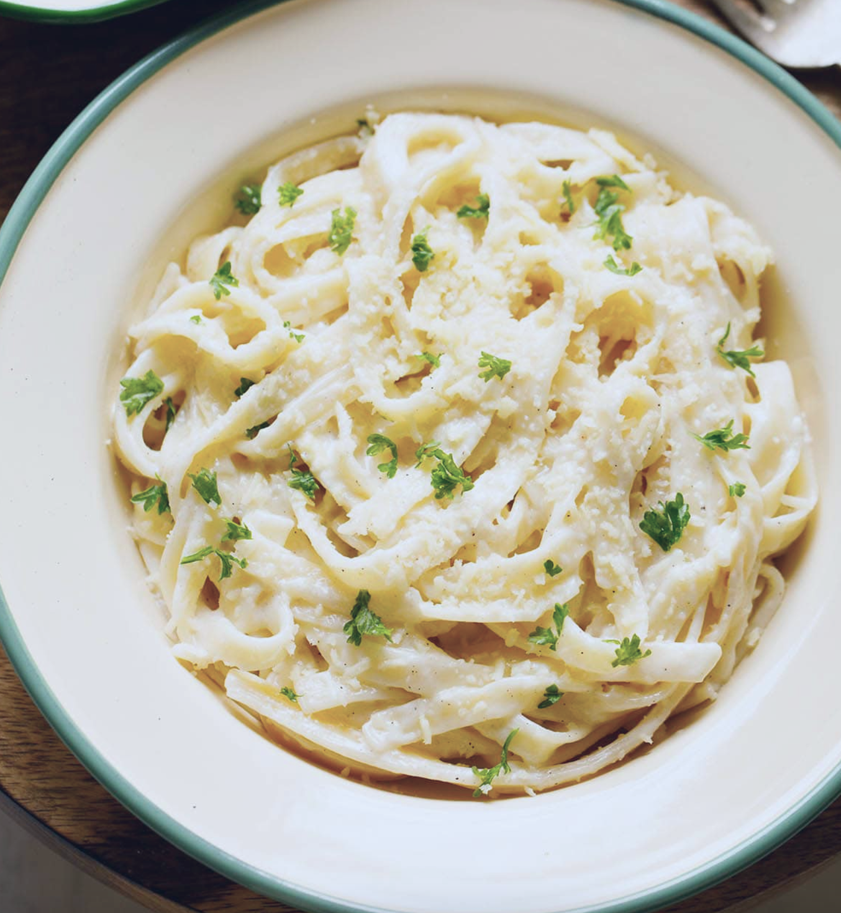

Alfredo Pasta!

Rich and creamy Fettuccine Alfredo is one of the easiest and most satisfying pasta dishes to make at home. Fresh cream is combined with parmesan cheese and butter to make a luscious Alfredo sauce in only minutes. It’s then tossed with your favorite past for a delicious and hearty vegetarian Italian dinner. Follow this step-by-step instructions to try this easy Fettuccine Alfredo Pasta recipe for yourself!
Ingredients:
- Fettuccine pasta
- 6 cups water
- salt and pepper
- 1 stick of butter
- 1 cup whipping cream
- Parmesan cheese
- Garlic
Instructions:
- In a deep pan or a sauce pan add water and salt. Stir.
- Cook pasta according to package instructions and let it drain
- In a large, deep skillet melt salted or unsalted butter on low heat.
- Once the butter has melted add the chopped garlic. Then, add the whipping creama and mix well with a whisk.
- With a whisk continuously stir as you bring the cream mixture to a low simmer on a low heat.
- Add grated vegetarian parmesan cheese to the cream and mix well.
- With the help og tongs, add the pasta to the alfredo sauce and mix well until all the pasta has been coated.
- Garnish with salt and black pepper as needed. Enjoy!
Click here to go back to the homepage.